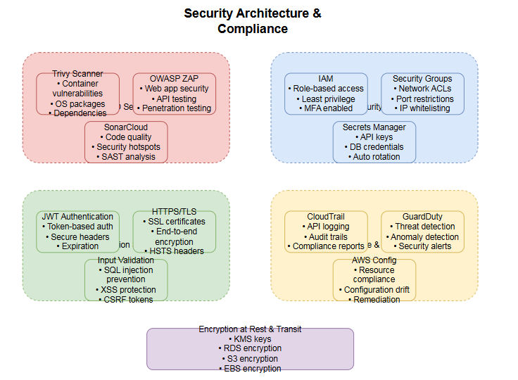
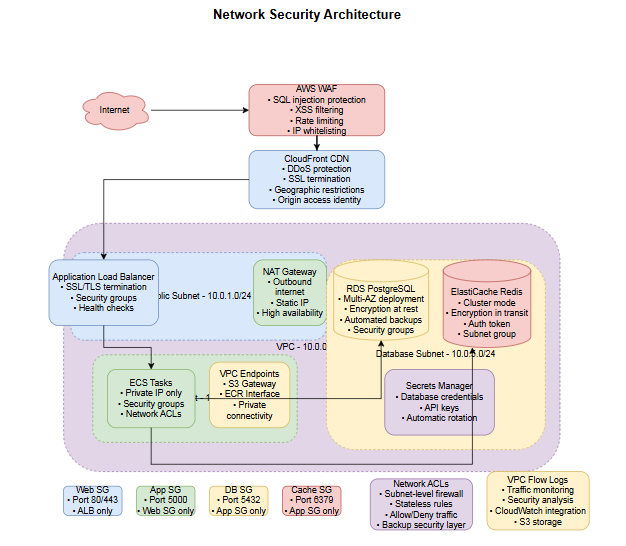

Implement comprehensive security best practices and compliance measures for the CI/CD pipeline and AWS infrastructure.

# Add to GitHub Actions workflow
- name: Run Trivy vulnerability scanner
uses: aquasecurity/trivy-action@master
with:
image-ref: '${{ env.ECR_REGISTRY }}/${{ env.ECR_REPOSITORY }}:${{ env.IMAGE_TAG }}'
format: 'sarif'
output: 'trivy-results.sarif'
- name: Upload Trivy scan results to GitHub Security tab
uses: github/codeql-action/upload-sarif@v2
with:
sarif_file: 'trivy-results.sarif'
# OWASP Dependency Check
- name: Run OWASP Dependency Check
uses: dependency-check/Dependency-Check_Action@main
with:
project: 'enterprise-app'
path: '.'
format: 'ALL'
args: >
--enableRetired
--enableExperimental
--nvdApiKey ${{ secrets.NVD_API_KEY }}
# Add to workflow
- name: SonarCloud Scan
uses: SonarSource/sonarcloud-github-action@master
env:
GITHUB_TOKEN: ${{ secrets.GITHUB_TOKEN }}
SONAR_TOKEN: ${{ secrets.SONAR_TOKEN }}
with:
args: >
-Dsonar.projectKey=enterprise-cicd-workshop
-Dsonar.organization=your-org
-Dsonar.sources=.
-Dsonar.exclusions=**/*.test.js,**/node_modules/**
-Dsonar.coverage.exclusions=**/*.test.js
# Enable GuardDuty
aws guardduty create-detector \
--enable \
--finding-publishing-frequency FIFTEEN_MINUTES
# Create custom threat intelligence set
aws guardduty create-threat-intel-set \
--detector-id 12abc34d567e8fa901bc2d34e56789f0 \
--name "Custom-Threat-Intel" \
--format TXT \
--location s3://my-bucket/threat-intel.txt \
--activate
# Enable Security Hub
aws securityhub enable-security-hub \
--enable-default-standards
# Subscribe to security standards
aws securityhub batch-enable-standards \
--standards-subscription-requests StandardsArn=arn:aws:securityhub:::ruleset/finding-format/aws-foundational-security-standard/v/1.0.0
# Create custom insights
aws securityhub create-insight \
--name "High Severity Findings" \
--filters '{"SeverityLabel": [{"Value": "HIGH", "Comparison": "EQUALS"}]}' \
--group-by-attribute "Type"
# Create database secret
aws secretsmanager create-secret \
--name "enterprise-app/database" \
--description "Database credentials for enterprise app" \
--secret-string '{
"username": "admin",
"password": "SecurePassword123!",
"engine": "postgres",
"host": "enterprise-db.cluster-xyz.us-east-1.rds.amazonaws.com",
"port": 5432,
"dbname": "enterprise_app"
}'
# Create API keys secret
aws secretsmanager create-secret \
--name "enterprise-app/api-keys" \
--description "API keys for external services" \
--secret-string '{
"sonar_token": "sqp_1234567890abcdef",
"github_token": "ghp_abcdef1234567890",
"slack_webhook": "https://hooks.slack.com/services/..."
}'
# Task definition with secrets
{
"family": "enterprise-app",
"networkMode": "awsvpc",
"requiresCompatibilities": ["FARGATE"],
"cpu": "256",
"memory": "512",
"executionRoleArn": "arn:aws:iam::ACCOUNT:role/ecsTaskExecutionRole",
"taskRoleArn": "arn:aws:iam::ACCOUNT:role/ecsTaskRole",
"containerDefinitions": [
{
"name": "backend",
"image": "ACCOUNT.dkr.ecr.us-east-1.amazonaws.com/enterprise-app-backend:latest",
"secrets": [
{
"name": "DATABASE_URL",
"valueFrom": "arn:aws:secretsmanager:us-east-1:ACCOUNT:secret:enterprise-app/database:username::"
},
{
"name": "API_KEY",
"valueFrom": "arn:aws:secretsmanager:us-east-1:ACCOUNT:secret:enterprise-app/api-keys:sonar_token::"
}
],
"logConfiguration": {
"logDriver": "awslogs",
"options": {
"awslogs-group": "/ecs/enterprise-app",
"awslogs-region": "us-east-1",
"awslogs-stream-prefix": "ecs"
}
}
}
]
}

# Terraform configuration
resource "aws_vpc" "main" {
cidr_block = "10.0.0.0/16"
enable_dns_hostnames = true
enable_dns_support = true
tags = {
Name = "enterprise-vpc"
}
}
resource "aws_security_group" "alb" {
name_prefix = "enterprise-alb-"
vpc_id = aws_vpc.main.id
ingress {
from_port = 80
to_port = 80
protocol = "tcp"
cidr_blocks = ["0.0.0.0/0"]
}
ingress {
from_port = 443
to_port = 443
protocol = "tcp"
cidr_blocks = ["0.0.0.0/0"]
}
egress {
from_port = 0
to_port = 0
protocol = "-1"
cidr_blocks = ["0.0.0.0/0"]
}
}
resource "aws_security_group" "ecs" {
name_prefix = "enterprise-ecs-"
vpc_id = aws_vpc.main.id
ingress {
from_port = 5000
to_port = 5000
protocol = "tcp"
security_groups = [aws_security_group.alb.id]
}
egress {
from_port = 0
to_port = 0
protocol = "-1"
cidr_blocks = ["0.0.0.0/0"]
}
}
resource "aws_security_group" "rds" {
name_prefix = "enterprise-rds-"
vpc_id = aws_vpc.main.id
ingress {
from_port = 5432
to_port = 5432
protocol = "tcp"
security_groups = [aws_security_group.ecs.id]
}
}
# RDS encryption
resource "aws_db_instance" "main" {
identifier = "enterprise-db"
engine = "postgres"
instance_class = "db.t3.micro"
storage_encrypted = true
kms_key_id = aws_kms_key.rds.arn
backup_retention_period = 7
backup_window = "03:00-04:00"
maintenance_window = "sun:04:00-sun:05:00"
}
# S3 bucket encryption
resource "aws_s3_bucket_server_side_encryption_configuration" "artifacts" {
bucket = aws_s3_bucket.artifacts.id
rule {
apply_server_side_encryption_by_default {
kms_master_key_id = aws_kms_key.s3.arn
sse_algorithm = "aws:kms"
}
bucket_key_enabled = true
}
}
# EBS encryption
resource "aws_ebs_encryption_by_default" "main" {
enabled = true
}
# ALB with SSL/TLS
resource "aws_lb_listener" "https" {
load_balancer_arn = aws_lb.main.arn
port = "443"
protocol = "HTTPS"
ssl_policy = "ELBSecurityPolicy-TLS-1-2-2017-01"
certificate_arn = aws_acm_certificate.main.arn
default_action {
type = "forward"
target_group_arn = aws_lb_target_group.backend.arn
}
}
# Force HTTPS redirect
resource "aws_lb_listener" "http_redirect" {
load_balancer_arn = aws_lb.main.arn
port = "80"
protocol = "HTTP"
default_action {
type = "redirect"
redirect {
port = "443"
protocol = "HTTPS"
status_code = "HTTP_301"
}
}
}
# Enable Config
aws configservice put-configuration-recorder \
--configuration-recorder name=default,roleARN=arn:aws:iam::ACCOUNT:role/aws-config-role \
--recording-group allSupported=true,includeGlobalResourceTypes=true
aws configservice put-delivery-channel \
--delivery-channel name=default,s3BucketName=enterprise-config-bucket
aws configservice start-configuration-recorder \
--configuration-recorder-name default
# Deploy compliance rules
aws configservice put-config-rule \
--config-rule '{
"ConfigRuleName": "encrypted-volumes",
"Source": {
"Owner": "AWS",
"SourceIdentifier": "ENCRYPTED_VOLUMES"
}
}'
# Create CloudTrail
aws cloudtrail create-trail \
--name enterprise-audit-trail \
--s3-bucket-name enterprise-cloudtrail-logs \
--include-global-service-events \
--is-multi-region-trail \
--enable-log-file-validation
aws cloudtrail start-logging \
--name enterprise-audit-trail
# Create log insights for security analysis
aws logs create-log-group \
--log-group-name /aws/cloudtrail/enterprise
# Sample CloudWatch Insights query
# fields @timestamp, sourceIPAddress, userIdentity.type, eventName
# | filter eventName like /Delete/
# | stats count() by sourceIPAddress
# | sort count desc
# ECS Task Role with minimal permissions
{
"Version": "2012-10-17",
"Statement": [
{
"Effect": "Allow",
"Action": [
"secretsmanager:GetSecretValue"
],
"Resource": [
"arn:aws:secretsmanager:us-east-1:ACCOUNT:secret:enterprise-app/*"
]
},
{
"Effect": "Allow",
"Action": [
"s3:GetObject",
"s3:PutObject"
],
"Resource": [
"arn:aws:s3:::enterprise-app-uploads/*"
]
}
]
}
# Lambda function for automated remediation
import boto3
import json
def lambda_handler(event, context):
ec2 = boto3.client('ec2')
# Parse Security Hub finding
finding = json.loads(event['Records'][0]['Sns']['Message'])
if finding['ProductFields']['aws/inspector/RuleName'] == 'Security groups should not allow unrestricted access to port 22':
security_group_id = finding['Resources'][0]['Id'].split('/')[-1]
# Remove unrestricted SSH access
ec2.revoke_security_group_ingress(
GroupId=security_group_id,
IpPermissions=[
{
'IpProtocol': 'tcp',
'FromPort': 22,
'ToPort': 22,
'IpRanges': [{'CidrIp': '0.0.0.0/0'}]
}
]
)
return {
'statusCode': 200,
'body': json.dumps('Remediation completed')
}